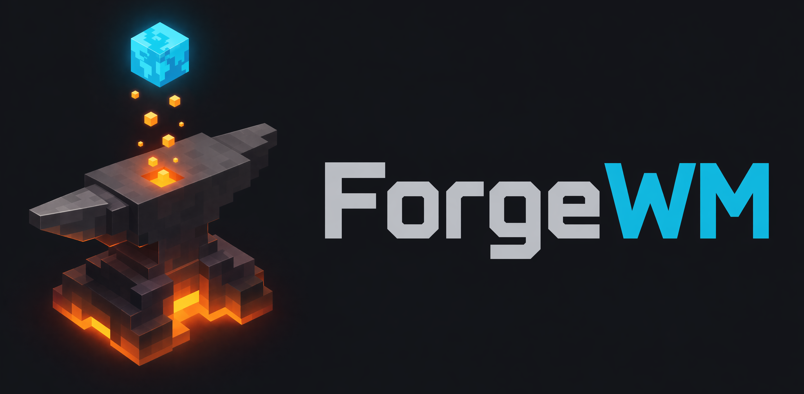
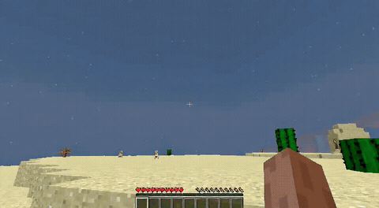

A Reproducible Training Recipe for Action-Controllable World Models

A Reproducible Training Recipe for Action-Controllable World Models
Train a real-time, playable Minecraft world model on 8 GPUs — keyboard & mouse control, fully open and reproducible.
We present ForgeWM, an integration project that provides the first fully open and reproducible training recipe for the Matrix-Game 2 (MG2) lineage. We do not introduce new methods, models, or data — instead, we connect MG2's game-native I2V backbone, GameFactory's open Minecraft gameplay data, and the Causal Forcing distillation paradigm into an end-to-end 4-stage pipeline that is trainable on 8 GPUs. MG2 open-sourced its weights but not its training data or training code, leaving the community unable to reproduce the MG2 recipe; ForgeWM fills this gap. Our final model achieves comparable generation quality to MG2's distilled checkpoint at 4-step inference, while fixing key failure modes (underwater drift artifacts) and releasing complete training code, data, and checkpoints.
Complete training code, pre-encoded data (89 GB LMDB), and checkpoints for all 4 stages (Stage 0 / 1 / 2 / 3) publicly available on HuggingFace.
Bidirectional SFT → Teacher-Forcing AR → Consistency Distillation → DMD, building on Causal Forcing paradigm.
Discrete keyboard (WASD) via cross-attention + continuous mouse via channel concatenation — MG2's hybrid action module.
Trained entirely on GameFactory's GF-Minecraft (~70h gameplay) with balanced action distribution. No proprietary data needed.
4-stage progressive distillation: from bidirectional diffusion to real-time causal generator.
# Full pipeline on 8 GPUs (~22K steps total)
torchrun --nproc_per_node=8 train.py --config configs/stage0_bid_sft.yaml
torchrun --nproc_per_node=8 train.py --config configs/stage1_teacher_forcing.yaml
torchrun --nproc_per_node=8 train.py --config configs/stage2_consistency_distillation.yaml
torchrun --nproc_per_node=8 train.py --config configs/stage3_dmd.yaml
ForgeWM uses Matrix-Game 2's three-pathway image conditioning:
ForgeWM (4-step DMD, Causal Forcing) vs Matrix-Game 2 (Self-Forcing distilled). Same reference frame, same action, 352×640.





| Project | Base Model | Control | Paradigm | I2V | Data Open | Train Code |
|---|---|---|---|---|---|---|
| ForgeWM | Wan2.1-1.3B | KB + Mouse | Causal Forcing | ✓ | ✓ | ✓ |
| Matrix-Game 2 | Wan2.1-1.3B | KB + Mouse | Self Forcing | ✓ | ✗ | ✗ |
| minWM | HY1.5 / Wan2.1 | Camera pose | Causal Forcing | HY only | ✓ | ✓ |
@misc{forgewm2026,
title={ForgeWM: A Reproducible Training Recipe for Action-Controllable World Models},
author={ForgeWM Team},
year={2026},
url={https://github.com/asdfo123/ForgeWM}
}
ForgeWM integrates work from multiple research groups:
We also thank the authors of:
Xinye Li — leeasdfo123@gmail.com
WeChat Group: